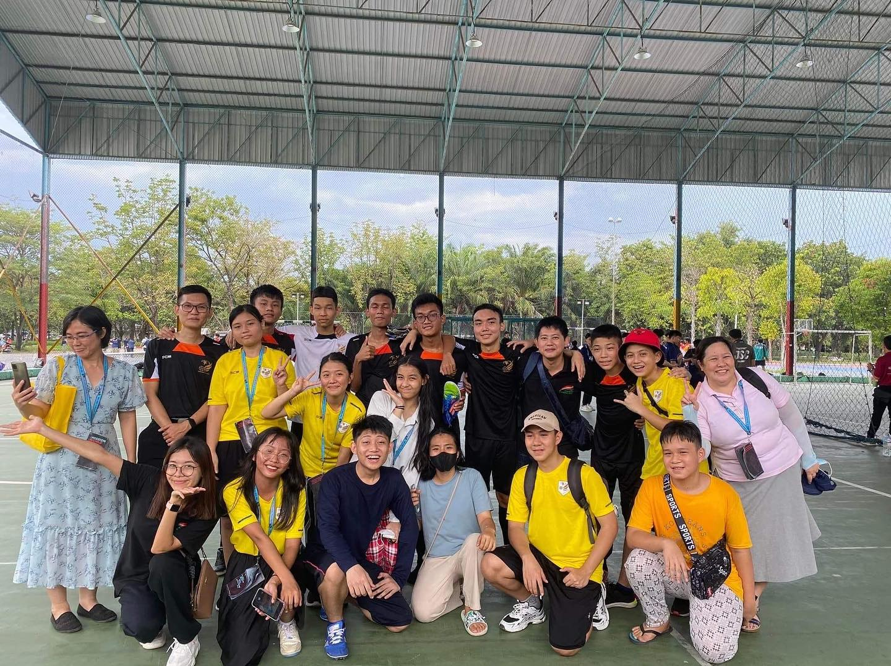
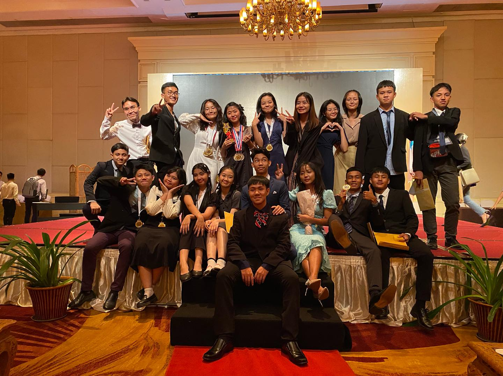

Events
-
10
December Hour of Code is an international movement by Code.org that reaches tens of millions of students each year in more than 180 countries across the world. Every student should have the opportunity to learn computer science. -
26
January PIA students visited to the Myanbisco Biscuit Factory on January 26, 2023. It was a delicious field trip! -
30
March At Sule Shangri-La, Yangon It is time to celebrate the achievements of all the bright young people. We are incredibly proud of our students as they worked so hard to achieve their goals. -
17
DecemberPROMISE International Academy Thanksgiving & Christmas Program at Franc Hall, Yangon -
3
March Engaging in chess helps improve a child's concentration, memory, and analytical abilities. It stimulates their brain and enhances their overall cognitive functions. Academic Performance:Studies have shown that students who play chess tend to perform better academically.
Regional student Convention
A Unique Heritage School .
Every Year, PIA has always overcome the odds to win a dozen medals each year. Last year, the students were able to win ____ medals and came back home with their heads held high at their victory.
School Info
Promise International Acedemy
Principal : Mr.Kaung Zan
Address : Thar-Yar-Aye street,Innsein
City : Yangon, Myanmar
Contact No. : 09-254088819
Email Id : pia@promise.edu.mm
Mini-soccer 1st palce

Graduating/Awarding Ceremony

About our school
With teamwork as our by-word, PIA continues to count on the collective effort of its students, parents, and school personnel in steering the institution towards its vision of building godly leaders for Myanmar and even beyond its borders.

Mrs.Naw Wah Wah Htoo
Administrator, PIA